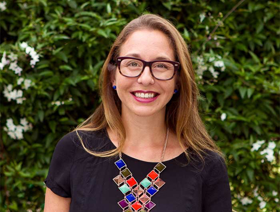

Our Alumni

Kathryn Bowen
Climate Change and Human Health Consultant, World Health Organization
2008 August Intensive

Leisa Shelton
Co-Curator Venice International Performance Art Week, Independent Curator, Artist Maker, Teacher and Mentor of Performance
2014 May Intensive

Tshinta O'Dwyer
Wetlands Program Officer, Conservation Volunteers Australia
2014 RELP Northern Rivers
Kathryn Bowen
Climate Change and Human Health Consultant, World Health Organization
2008 August Intensive


Leisa Shelton
Co-Curator Venice International Performance Art Week, Independent Curator, Artist Maker, Teacher and Mentor of Performance
2014 MayIntensive
Tshinta O'Dwyer
Wetlands Program Officer, Conservation Volunteers Australia
2014 RELP Northern Rivers